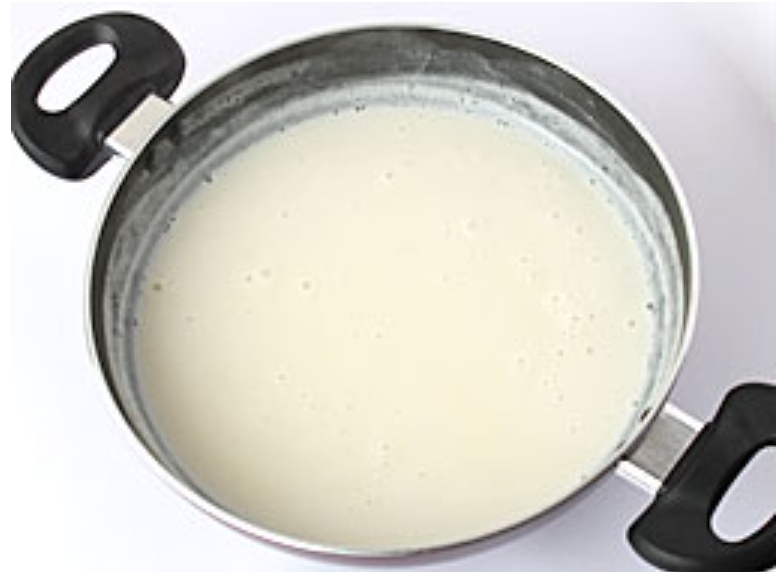
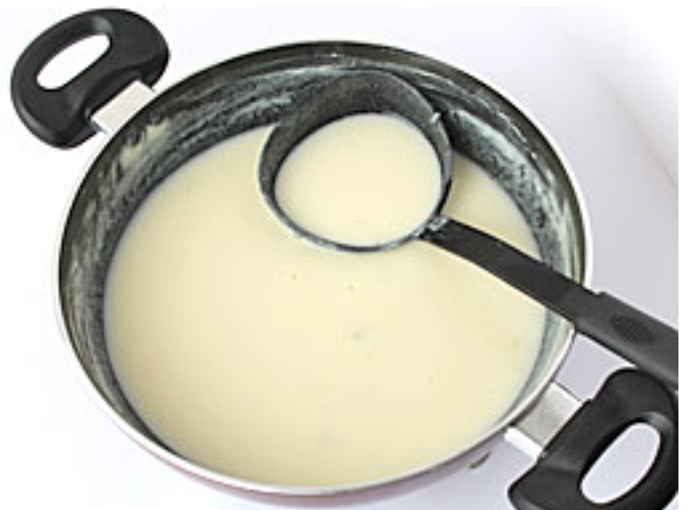
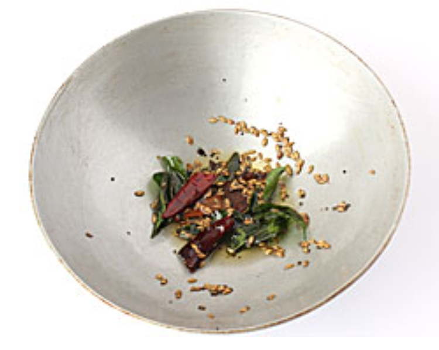
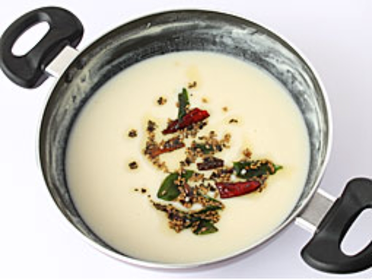
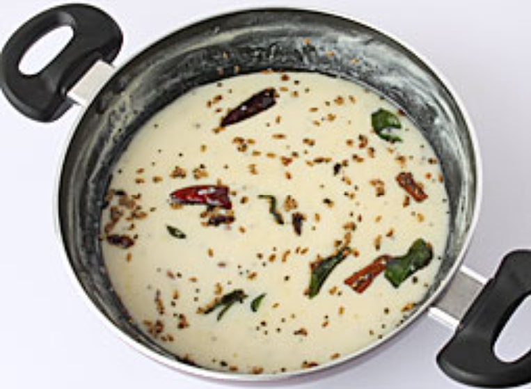

1. એક બાઉલમાં હેન્ડ બ્લેન્ડરનો ઉપયોગ કરીને દહીં અને બેસનની સાથે મુલાયમ થાય ત્યાં સુધી વલોવી
લો. ધ્યાન રહે કે મિશ્રણમાં ગઠ્ઠા ન બને. તેમાં ૨ કપ પાણી નાખોં અને ફરીથી વલોવી લો.

2. એક મધ્યમ આકારના ઊંડા પેન/કડાઈમાં દહીં-બેસનનું બનાવેલું મિશ્રણ નાખોં અને તેને મધ્યમ આંચ પર
ઊભરો આવવા માટે મૂકો.

3. તેમાં પીસેલા લીલા મરચાં-આદુંની પેસ્ટ, પીસેલું લસણ, ખાંડ અને ધીમી આંચ પર લગભગ ૧૦ મિનિટ
માટે અથવા બેસનની કાચી સુગંધ આવવાની બંધ થઈ જાય ત્યાં સુધી પકાવો. મિશ્રણ પાણી જેવુ પાતળું હોવું જોઈએ.
જો જરૂર લાગે તો તેમાં વધારે ૧/૨ કપ પાણી નાખોં.

4. તે દરમિયાન, એક નાના વઘાર પેન/કડાઈમાં વઘાર બનાવવા માટે તેલ અથવા ઘી ગરમ કરો. તેમાં રાઈ અને
મેથી નાખોં, જ્યારે તે ફૂટવા લાગે, ત્યારે તેમાં તજ, લવિંગ, જીરું, સૂકું લાલ મરચું અને લીમડાના પાન
નાખોં; તેને ધીમી આંચ પર ૩૦-૪૦ સેકંડ માટે સાંતળો.

5. ગેસને બંધ કરી દો અને વઘારને ગુજરાતી કઢીમાં નાખોં; બરાબર મિક્ષ કરો.

6. તેમાં વઘાર નાખ્યા પછી, તેને ૨-૩ મિનિટ માટે ઉકળવા દો
7. ગેસને બંધ કરી દો અને બારીક સમારેલા લીલા ધાણાથી સજાવો.